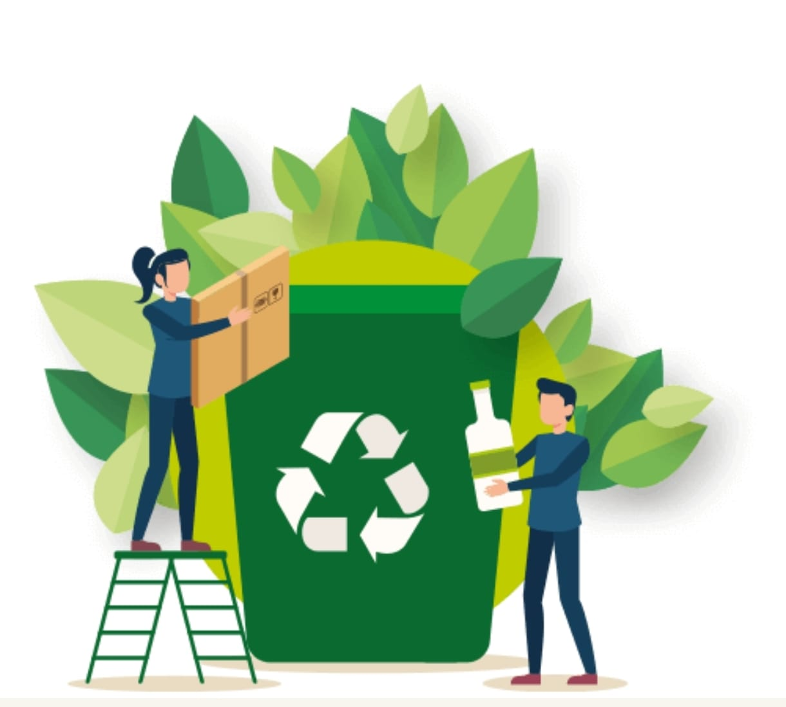

El reciclaje es un proceso mediante el cual los residuos se convierten en nuevos productos o materias primas. Con esto reducimos la cantidad de basura y aprovechamos mejor los recursos naturales.
Reduce la contaminación del aire, agua y suelo.
Papel
Carton
Periodico
Envases
Bolsas
Botellas
Latas
Chatarra
Restos de comida
Botellas, envases
Contenedor verde: Deposita aquí los residuos orgánicos aprovechables. Incluye restos de comida, cáscaras de frutas y verduras, residuos de poda, hojas secas y demás materiales biodegradables. Estos desechos pueden transformarse en compost o abono, ayudando a reducir la cantidad de basura y a cuidar el medio ambiente
Contenedor negro: En este contenedor van los residuos no aprovechables, es decir, aquellos que no se pueden reciclar ni reutilizar. Por ejemplo: servilletas y papeles contaminados con comida o grasa, empaques metalizados, colillas de cigarrillo, residuos sanitarios, papel carbón y desechos similares. Separarlos correctamente evita la contaminación de los demás residuos.
Contenedor blanco: Aquí debes colocar los residuos reciclables. Van las botellas plásticas, envases de vidrio, latas, cartón, papel limpio, empaques y bolsas plásticas en buen estado. Recuerda que deben estar limpios y secos para que puedan ser reincorporados al proceso de reciclaje y convertirse en nuevos productos.
¡Gracias por visitar nuestra pagina, juntos reciclamos por un mejor planeta!
Contacto:harold.mayo@miuniclaretiana.edu.co
Telefono:3205395891